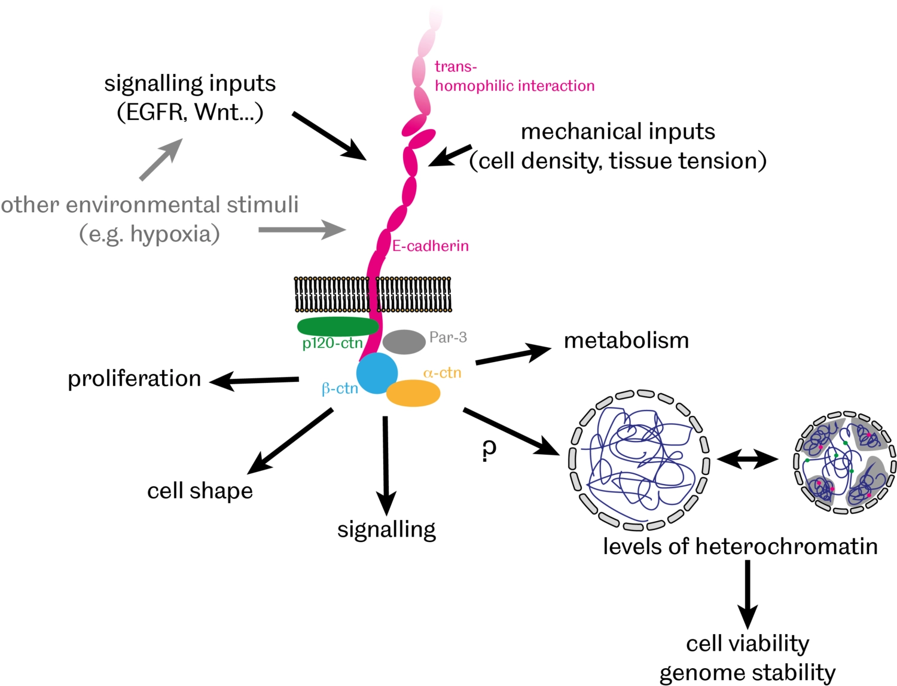
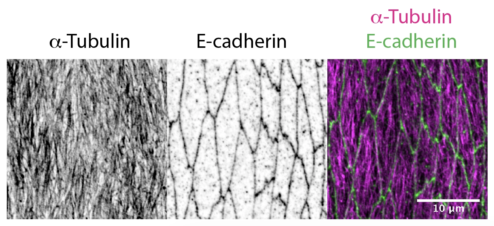

Our Research
The mechanism that attaches neighbouring cells in our body to each other is known as cell-cell adhesion. Recent work has demonstrated that cell-cell adhesion is also important for communication between the neighbouring cells to decide when to divide, migrate or die.
Our lab is interested to understand how cell-cell adhesion contributes to normal development of a whole organism. We focus on E-cadherin, a transmembrane protein that provides cell-cell adhesion between the epithelial cells. Using a combination of genetic assays, biochemistry and quantitative imaging techniques in Drosophila model system we study how E-cadherin functions in various developmental processes, for example cell neighbour exchange and tissue growth, and how it is regulated during development. In future, we aim to apply this knowledge about normal function of E-cadherin to treatment of medical conditions arising from defects in E-cadherin function such as epithelia-derived tumours.
Projects
Roles of E-cadherin in morphogenesis and diseaseFunctions of E-cadherin trafficking
Organisation of microtubule cytoskeleton in epithelia
Roles of E-cadherin in morphogenesis and disease
In addition to providing a physical link between cells, there is growing evidence that cell-cell adhesion also contributes to communication between cells by facilitating various signalling events, thereby modulating cell proliferation, differentiation and apoptosis. We have recently discovered that E-cadherin-mediated cell-cell adhesion controls the organisation of DNA into 'chromatin' – a complex of DNA, RNA and associated proteins - inside the nucleus [PubMed]. In particular, we found that levels of heterochromatin – compacted and largely silenced chromosomal regions – inversely correlate with levels of E-cadherin with broad implications for genome stability and cell survival during normal development and in cancer cells.
Building on these findings, we currently investigate:
- How does E-cadherin affect heterochromatin organisation?
- What are the consequences of this regulation on cell survival and genome stability?
- What is the significance of this E-cadherin role for tissue morphogenesis, homeostasis and pathology?
Functions of E-cadherin trafficking
The amount of E-cadherin at the cell surface and hence, its availability for adhesion and interaction with signalling pathways, is critical for normal development and homeostasis. The amount of E-cadherin at the cell surface is determined by a balance between internalisation and degradation, which remove E-cadherin from the plasma membrane, and biosynthesis and recycling, which conversely increase E-cadherin. In both mammalian and fly cells, E-cadherin is constantly endocytosed and then recycled in Rab11-positive recycling endosomes.
In Drosophila epithelial cells, there are two pools of E-cadherin: stable and recycled [PubMed]. The recycled E-cadherin is specifically associated with the protein Bazooka/Par-3 [PubMed], and requires the protein p120catenin for internalisation from cell surface [PubMed] as shown on the diagram below.
We also demonstrated that conversely the internalisation of E-cadherin from the cell surfaces is inhibited by a non-canonical function of the Adaptor Protein 1 [PubMed]. Endocytic trafficking is a powerful tool to control signalling activities inside cells. In particular, the internalisation of receptors into early endosomes from the plasma membrane creates intracellular signalling platforms, or “signalosomes”, with high concentrations of signalling pathway components to facilitate signal transduction. We observed that E-cadherin endocytosis affects gene expression, JNK signalling, apoptosis and cell shape.
The projects in the lab address these and other functions of E-cadherin endocytosis and recycling, including:
- How does E-cadherin endocytosis modulate activities of such signalling pathways as EGFR, JAK/STAT and JNK?
- How do E-cadherin endocytosis and recycling affect cell shape and survival?
- What are the consequences of changes to E-cadherin endocytosis for epithelial development, homeostasis and pathology?
Organisation of microtubule cytoskeleton in epithelia
Delivery of cellular components along the microtubule cytoskeleton is vital for correct cellular, and therefore organism function. The microtubule transport network is highly dynamic. It self-organises to adapt to the shape and demands of a cell: individual microtubules constantly grow or collapse. However, we found that in Drosophila epithelial cells, microtubule organisation is driven by cell geometry alone: microtubules are aligned with the cell’s long axis in elongated epithelial cells in Drosophila embryos as shown in the figure below; this alignment correlates with cell elongation, and microtubules become disordered when cell elongation is inhibited [PubMed]. We also demonstrated the extreme robustness of the microtubule organisation in vivo, so that the tissue-scale self-organization of a microtubule network depends only on cell geometry and the distribution of the microtubule minus-ends [PubMed].
Now, we aim to understand how the dynamic microtubule network and stochastic transport along it result in a robust outcome with a statistically reproducible localisation of cell components in biologically relevant positions. The current projects in the lab include:
- How do the interactions between microtubules, such as those leading to the formation of bundles, form and impact transport?
- How do tubulin posttranslational modifications affect the organisation of the microtubule network and transport on it?
- How is E-cadherin transported on microtubule network to achieve a robust localisation in the Drosophila epithelia?
Funding: